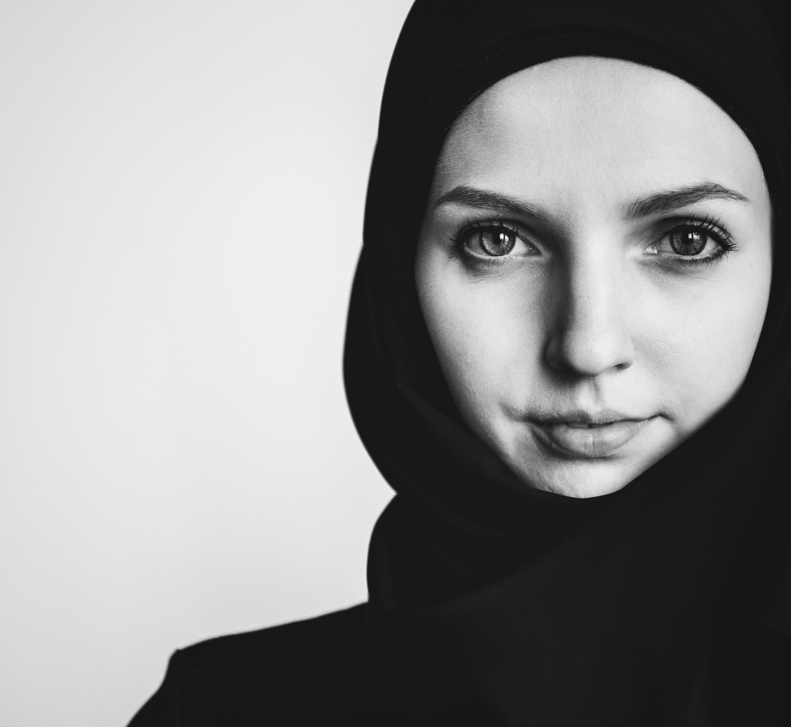

Vision
Our vision is for our participants to become strong women, who serve as role models for their community and generations to come.
|
What is our programme?
- Monthly Support Sessions during which we cover topics we feel will be the key to unlocking their potential. These sessions cover the following:
- Mentoring where we aim to match our young people with mentors in their aspiring fields.
- Trips to build an affective bond between our members, we plan day trips at least twice a year.
- Practical activities - the girls have previously volunteered at soup kitchens, senior peoples homes and organised picnics for refugees.
|
History and Progress
In August 2016 we launched our organisation with an event in Willesden Green to introduce our work and ambitions to the community. We had some awesome speakers and it was the perfect introduction to the community.
Since then, slowly but surely, SEEDS has continued to grow. Our first session had two participants, but over the years that number grew and so did our volunteers team.
|
Meet Our Team

Asmaa is a professional Engineer specialising in system optimisation. But despite
her busy schedule, she also volunteers for another organisation in London which
provides tuition to teenage Muslims. She brings her brilliant mind and incredibly kind
character to each session, paying attention to every student and making sure that no
one is left out.
Saba is a teacher at a local girls secondary school so she is certainly no stranger
to teenagers! She has a background education in History and extensive experience
teaching Islamic seerah. Saba often brings her skills and knowledge to SEEDS,
running sessions about the stories of the sahaba and the Islamic caliphate.
Hafsa has years of experience teaching teenagers and is currently working with a charity for young carers. Alongside this, she has a background in
Psychology and so maybe that’s why she loves a good discussion, often encouraging the girls to speak their mind and share their opinions.
|
Sabiha is a newly qualified doctor and currently works in a hospital. It was awesome when she bought her blood pressure monitor and stethoscope into a
session for the girls to use, as she talked about different career paths in medicine. But the best thing about Sabiha is the beaming positivity she brings to every session,
when most might loose their patience, Sabiha is there, smiling and always always super cool..
|
Khadijah is a law graduate with a background in Human Rights. It is probably those experience which means Khadijah often emphasises the importance
of giving back to the community, encouraging the girls to set long term goals and volunteer. Khadijah is very ambitious and her lovely character shines throughout the
organisation.
|